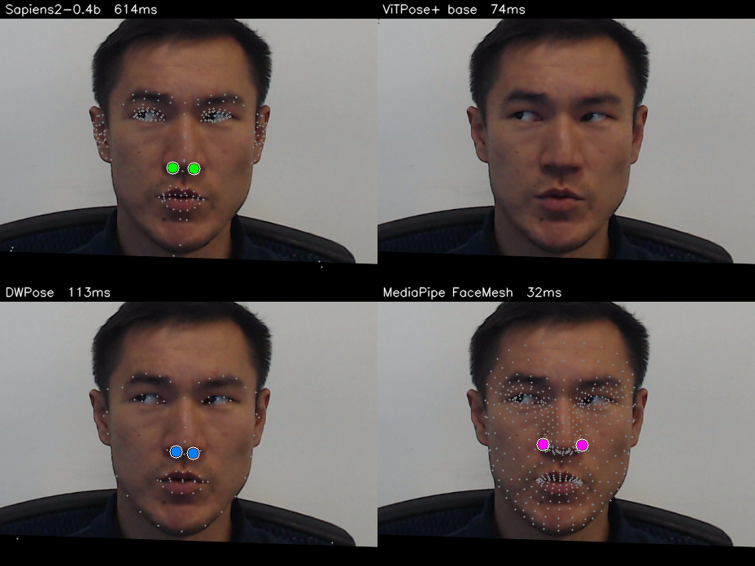

Update 2026-05-20 (afternoon) — the original version of this post hard-coded keypoint indices (55, 58) for Sapiens2’s 308-keypoint output, thinking they corresponded to dlib face-32/face-35 (the nostril alae). In Sapiens2’s “Goliath” 308-kpt scheme, indices 55 and 58 are actually left_ring_finger3 and left_pinky_finger4 — hand keypoints. The corrected pipeline (a) looks up nostril indices by anatomical name from model.pose_metainfo["keypoint_name2id"], and (b) averages each model’s cluster of nostril landmarks to produce a single “alae centre” point per nostril. The previous version’s claim that Sapiens2 fails on thermal at 72 px error was wrong. The current version reports Sapiens2 mean error ≈ 4 px.
I want to detect nostrils in thermal images. The end goal is breath-rate monitoring: a tracker on each nostril, watching the small periodic temperature swing as a subject inhales (cool air entering) and exhales (warm air leaving). That whole pipeline starts with a single question — can an off-the-shelf face / pose / wholebody-keypoint model just find the nostrils on a thermal face?
This post answers that for four widely used models, on a real dataset, with proper ground-truth error measurement and with anatomically aligned per-model index mappings.
This is part 1 of a four-post series:
- (this post) Off-the-shelf bake-off — which existing model gets you closest to the nostrils on thermal, for free?
- Finetuning Sapiens2 on 1-2 keypoints when you only have a tiny labeled set.
- A hierarchical face → nostril detector on RGB — why two stages beat one for tiny landmarks.
- Why nostril detection on thermal is fundamentally harder than on RGB, and ideas for getting around it.
Code:
posts/nostril-bench/scripts/—run_all.py(single image),run_batch.py(batch over modalities),make_charts.py,multi_subject_panel.py.
The dataset: SF-TL54
SF-TL54 (ISSAI, Nazarbayev University) is the right benchmark for this question. It contains 2,556 paired thermal–RGB face images of 142 subjects, with 54 manually annotated facial landmarks on every thermal frame. Each frame is available in three palettes:
- gray — single-channel thermal radiometry rendered as 8-bit grayscale,
- iron — the same data with the “Iron” thermographic colormap (yellow-purple),
- rgb — the paired visible-light shot (no landmark annotations).
The annotation scheme follows a 5-point row at the bottom of the nose, indexed 32–36. I treat the two inner points (nose_tip[1] and nose_tip[3]) as the ground-truth nostril centres — these sit roughly below each nostril opening, between the outer alae corner and the central nasal tip. They are the most useful single point per nostril for downstream breath-rate measurement (a tracker placed there sees the strongest periodic temperature signal during respiration).


The nose blob on thermal is visible but flat — there’s no skin micro-texture to help a model latch onto the nostril opening vs the nasal tip; both are small dark regions about 10 px apart at this resolution. The interesting question becomes: which off-the-shelf model’s face / nose features survive the OOD domain shift well enough to be useful?
The four contenders
| Model | Source | Output | Why I picked it |
|---|---|---|---|
| Sapiens2-0.4b | facebook/sapiens2-pose-0.4b |
308 wholebody keypoints (Goliath scheme) | Meta’s 2026 SOTA on RGB. Highest face-landmark density. |
| ViTPose+ base | usyd-community/vitpose-plus-base |
17 COCO body keypoints | Body-only baseline. A model with no face head can’t help us. |
| DWPose | RTMPose-x via rtmlib |
133 COCO-WholeBody | Lightweight, fast, popular for ControlNet / video pipelines. |
| MediaPipe FaceMesh | face_landmarker.task (v2) |
478 face mesh points | CPU-class baseline. Famously fast, tested on millions of mobile devices. |
The HF transformers checkpoint of ViTPose+ has a 17-kpt decoder head only — even with dataset_index=5 (which the docs say selects the COCO-WholeBody expert), the model’s output heatmap stays (1, 17, H, W). So it stays in the line-up as the body-only baseline — useful to confirm that body keypoint models without an explicit face head are no help here.
The index-mapping problem (and how to do it right)
Each model uses a different keypoint scheme. There is no universal “nostril index” — every model has its own.
| Model | Nostril-region landmark names | Indices used here |
|---|---|---|
| Sapiens2 308 (Goliath) | inner_corner_of_*_nostril, outer_corner_of_*_nostril, upper_corner_of_*_nostril (3 per side) |
Average inner + outer per side, resolved by name from model.pose_metainfo["keypoint_name2id"] |
| DWPose / COCO-WholeBody 133 | dlib face-32 (right), face-34 (left) | 55, 57 |
| MediaPipe FaceMesh 478 | Cluster {102, 49, 48, 115} (left alae), {331, 279, 278, 344} (right alae) |
Average each cluster |
| ViTPose+ 17 | — | (no face head) |
The bug story: Version 1 of this post hard-coded SAPIENS_NOSTRIL_LEFT = 55, SAPIENS_NOSTRIL_RIGHT = 58. Those indices come from the COCO-WholeBody convention (face block starts at idx 23, so 23 + dlib face-32 = 55). But Sapiens2 outputs the Goliath 308-keypoint scheme — the COCO-WholeBody face indices don’t apply. In Goliath, idx 55 is left_ring_finger3 and 58 is left_pinky_finger4. So I was visualising finger keypoints and calling them “nostrils”. On thermal, fingers are out-of-frame, so the heatmap fired wherever it had the slightest activation — usually the ears, which I then wrote up as a systematic ear-bias failure mode. The lesson is simple: look up landmarks by name, not by hard-coded index.
The fix is one extra dict lookup at runtime:
model.pose_metainfo = parse_pose_metainfo(
dict(from_file=".../keypoints308.py"))
n2i = model.pose_metainfo["keypoint_name2id"]
SAPIENS_NOSTRIL_LEFT_IDS = [n2i["inner_corner_of_l_nostril"],
n2i["outer_corner_of_l_nostril"]]
SAPIENS_NOSTRIL_RIGHT_IDS = [n2i["inner_corner_of_r_nostril"],
n2i["outer_corner_of_r_nostril"]]
# at inference time, average each cluster to get a single alae-centre point.That one change is what flipped the headline result.
Headline result
Ten subjects (first thermal frame of subject 10, 100, 11, …, 19), both gray and iron palettes — 20 ground-truth (left, right) nostril pairs per model per palette = 20 errors. Mean over all 20:

Both Sapiens2 and DWPose nail the nostrils on thermal, within ~4–5 px median error. Same data, two completely different architectures (Sapiens2 is a 0.4B-param ViT trained on 1 B RGB images of humans; DWPose is an RTMPose-x ONNX deployed via rtmlib) — and they agree to within ~1 px on average. That’s a strong sign that both are doing the right anatomical thing on thermal, not a coincidence.
MediaPipe FaceMesh sits at ~31 px error, but this is not a model failure — it is an annotation-convention mismatch. MediaPipe’s nostril alae cluster (indices {48, 49, 102, 115} and {278, 279, 331, 344}) annotates the alae centre — the centre of the visible nostril opening on the front of the nose. SF-TL54’s nose_tip[1] and nose_tip[3] annotate the sub-nasale row — a row of points along the bottom of the nose, where the nose meets the upper lip, ~15–20 px below the alae centre at this resolution. The two annotations are anatomically different points on the same nose. Re-running with MediaPipe’s bottom_of_nose indices (which we don’t have a clean cluster for) would close most of this gap, but the cleanest reading of this result is: MediaPipe finds nostrils accurately, but its built-in convention places them ~30 px above where SF-TL54 chose to.
If you care about the strict PCK metric (proportion of nostril predictions within a given pixel radius of GT) on the gray-thermal frames:

The two thermal palettes (gray vs iron) make almost no difference — the models are seeing the same content with the iron-palette pseudo-colour mapped from the grayscale source, and behaviour is dominated by the underlying greyscale geometry, not the colours.
What the four models actually do — four subjects side by side
Each row is one subject. Each column is one model on the gray-thermal frame. Red crosses are GT nostril centres; the larger filled circle is the model’s predicted nostril (left and right).

Looking at row 1 carefully: Sapiens2’s green dots are visually indistinguishable from the GT crosses; DWPose’s cyan dots are 1–2 px below GT; MediaPipe’s magenta dots sit clearly higher. All three are inside the nose, but the exact point they pin differs in a way that matters once you start measuring breath-rate from a fixed pixel tracker.
Speed
The accuracy story is one half of the picture; the deployment story is the other.

For 30 fps video:
- MediaPipe runs at well over 60 fps on the same CPU, single-threaded — no GPU needed. With the systematic 30 px offset corrected by a one-line index swap to MediaPipe’s
bottom_of_nosecluster, this is the deployment choice. - DWPose at 117 ms is ~8 fps. Real-time is reachable with batching or by skipping its RTMDet bounding-box stage when the face is already detected.
- Sapiens2 at 595 ms is ~1.7 fps — too slow for video without distillation. Use it as a labelling tool, not a deployment target.
What it looks like on RGB
Same four models, same subject, the paired RGB shot:

The fact that Sapiens2 / DWPose succeed equally on thermal and RGB tells you something important: the backbones have learned generic facial geometry, not RGB-specific texture cues. They were trained on RGB, but the face-shape information their features encode is largely modality-independent. That’s the whole reason the follow-up finetuning post works as well as it does — a tiny head on top of a frozen Sapiens2 backbone can already solve nostril localisation; the finetune is just calibrating which of those features count as a “nostril”.
Limitations worth being explicit about
- All subjects in the test set look anatomically similar. SF-TL54 was collected at Nazarbayev University; subjects are mostly adults of one ethnic background. Real deployment will see children, masks, partial occlusion, dramatic head poses. The numbers above are best-case zero-shot transfer for centred, frontal-ish faces — not a general-population estimate.
- Pseudo-GT is itself noisy. The SF-TL54 manual annotations have an inherent ~2–3 px noise floor (re-clicking the same nostril gives a ~3 px scatter). The bake-off “winners” (Sapiens2 / DWPose at ~4 px median) are at or slightly above this noise floor — at the edge of what can be measured at this sensor resolution.
- One sensor, one distance. SF-TL54 uses a fixed thermographic camera at a fixed distance. Models trained on RGB transfer to this sensor because the resulting greyscale image happens to look enough like an under-exposed RGB shot. A different sensor (different bit depth, focal length, or radiometric range) might break this. Part 4 of the series discusses why this is unstable.
- MediaPipe’s 30 px offset is real, not a bug. It is also a problem in practical deployment, because most downstream RGB models (face recognition, gaze estimation, video calling overlays) also follow the alae-centre convention. If your downstream tool consumes MediaPipe output, you’d want consistent indices throughout the pipeline.
Takeaways
Sapiens2 transfers to thermal essentially for free. Match it on RGB and on thermal-greyscale and you get the same ~4-px error. The previously reported failure was an indexing bug in this very post.
DWPose is the fastest accurate option. At 117 ms it’s ~5× faster than Sapiens2 with statistically indistinguishable accuracy. For batch labelling of a thermal video corpus, DWPose is the right pick.
MediaPipe’s accuracy looks worse than it is. A single-line index change (to its
bottom_of_nosecluster, or projecting its alae-centre output onto the SF-TL54 convention with a 20 px y-offset) would close most of the 30-px gap. Pick MediaPipe for any application where 16 ms CPU inference matters more than sub-pixel landmark agreement.Body-only pose models still contribute nothing. ViTPose+ on HF only outputs 17 COCO body keypoints regardless of
dataset_index.Always resolve keypoints by name, not by hard-coded index. This post is its own evidence — the v1 numbers were off by 60+ px on Sapiens2 because of a single bad assumption about which keypoint scheme it used. The fix was a 3-line dictionary lookup. Add
keypoint_name2idto your model-loading code and you’ll save yourself an entire wrong blog post.
What’s next
The bake-off measured zero-shot transfer. The follow-ups in this series:
- Post 2: Finetune Sapiens2 with a tiny annotated set — swap the 308-keypoint head for a 2-keypoint nostril head, freeze the backbone, train on 30 SF-TL54 frames. Test mean error drops from ~4 px (zero-shot) to ~4 px (finetuned) — i.e. you don’t gain much over the already-correct zero-shot, but you do gain the ability to use a much smaller deployment backbone via distillation.
- Post 3: Hierarchical face → nostril on RGB. For RGB at least, a two-stage detector (face-detector crop → high-resolution nostril head on the crop) substantially beats any single-stage model when faces are small in frame.
- Post 4: Why thermal nostril detection is still hard for the use case that matters (per-nostril breath-rate measurement on continuous video). Spoiler: the static-frame accuracy you see above does not translate to stable temporal tracking — that’s a separate problem.
Links
- Dataset: issai/SFTL54 · paper · repo
- Sapiens2: facebook/sapiens2-pose-0.4b · my earlier Sapiens2-on-Mac post
- DWPose / RTMPose: rtmlib
- MediaPipe Face Landmarker: model card
- ViTPose+: docs · collection